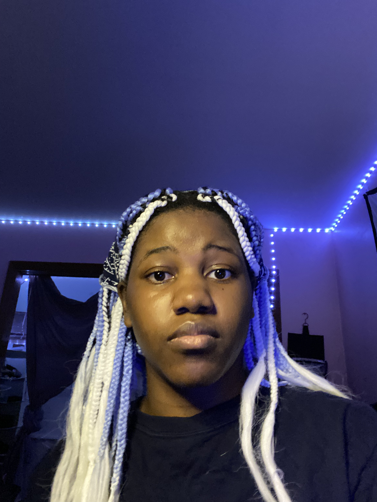

This is my creative statement. My name is Onyi, and at my core, I am an animator and a storyteller. My first love will always be the magic of hand-drawn animation—the fluid expressiveness of Looney Tunes, the physical comedy of Tom and Jerry, and the moody, art-deco brilliance of Batman: The Animated Series. That tangible, frame-by-frame craft is where my heart lives.
But my drive to bring things to life extends far beyond the page. I sculpt, I build miniature worlds through architecture, and I weave narratives through every medium I can touch. This passion for life in all its forms is why I’m so fascinated by its source code: behavior. I’m obsessed with analyzing why we move, think, and react—whether it’s the subtle flick of a human hand or the alien grace of marine life. That curiosity led me to earn my associate’s in Biology at LAGCC.
Now, I’m building a truly interdisciplinary foundation with a triple major in Cognitive Psychology, Media Studies, Emerging Media (for animation), and Studio Art. I’m not just collecting degrees; I’m collecting lenses through which to see and create. I’m constantly exploring new styles to expand my visual vocabulary in film and design. If you want to see where this exploration leads, you’ll find the bulk of my work on my primary art site, onyiocean.org.